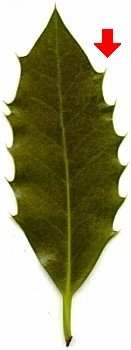

|
| Woher kommt der Name Stechpalme?
 | Stech-:
Die Zähne am Blattrand sind sehr spitz und können in die Haut stechen.
-Palme:
In der katholischen Kirche ist es Brauch, am Palmsonntag vor Ostern sogenannte Palmsträuße zu binden.
Dieser Brauch erinnert daran, dass Jesus bei seinem Einzug in Jerusalem mit Palmzweigen begrüßt wurde.
In Europa gibt es kaum Palmen, daher werden Zweige von Stechpalmen und anderen Pflanzen verwendet.
Auf Englisch heißt die Stechpalme
Holly. |